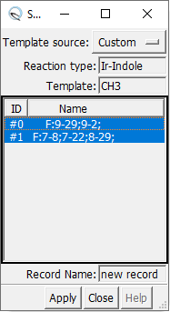
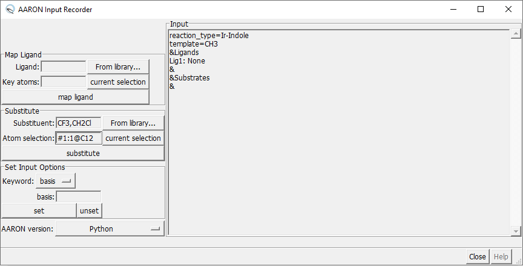

Begin by going to → → . This will open a dialog asking you to select a source for your TS templates.
AARON input files require that you specify a TS template. There are three options for loading TS template structures into Chimera:
In this dialog, you have options for swapping the ligand, changing substituents, and setting keywords for the AARON input file. On the right side, you can see the contents of the AARON input file. The input file contents will update if you make any changes.

A list of molecules is associated with each entry in the AARON input file.
Changes made to one molecule using this dialog menu or the arninp command will change all associated molecules.
A new entry can also be added to the AARON input file.
To prevent the entry from being added to the input file, check the box.
As an example, say you have loaded 10 structures from a TS template library.
If you were to swap the ligand by specifying just one of the structures, 10 new structures would be loaded in - one for each of the original template structures, but with the new ligand.
Suppose you check the box before swapping the ligand.
No new entry would appear under the section.
Then, if you substitute one of the positions on the new ligand, 10 new structures would be opened like before.
Suppose you don't check before substituting on the ligand.
A new entry will appear in the section specifying both the new ligand and the substitution.
Although specifying one atom should be enough, you should specify a model when swapping the ligand.
Specifying atoms is not very similar to how ligand changes are specified in AARON input files.
You can type in the Chimera object selection language (OSL) model selection in the box.
Alternatively, you can select a model by some other means and press to fill in the box with the OSL specifiers for your current selection.
You can specify the new ligand by entering the ligand's libary name in the box.
You can also press to open a dialog that lists the ligands in the library.
If you press with ligands selected in the ligand library dialog, the box will be filled in automatically.
Pressing will swap the current ligand for a new one.
To change a substituent, you must specify the position you're modifying.
You can type in the Chimera OSL atom selection in the box.
Alternatively, you can select atoms by another means and press to fill in the box with the OSL specifiers for your current selection.
You can specify the substituent by entering the substituent's libary name in the box.
You can also press to open a dialog that lists the substituents in the library.
If you press with substituents selected in the substituent library dialog, the box will be filled in automatically.
Pressing will add the substituent.
If the atom selection is on the ligand, you should see a new entry in the section of the input file.
If the atom selection is on the substrate, you should see a new entry in the section of the input file.
If the atom selection is on a molecule that has already been substituted, the new entry will contain instructions for both substitutions.
Select the keyword you'd like to add or modify from the dropdown menu.
Fill the value of the keyword into the blank and press to add/modify the keyword in the input file, or press to remove the keyword from the input file.
See the AARON GitHub wiki for more details about input file keywords.
Currently, there is not option for saving the contents of the AARON input to a file. However, you can copy the and paste it into a file (e.g. highlight the input and CTRL + C, CTRL + V - or whatever your equivalent is).